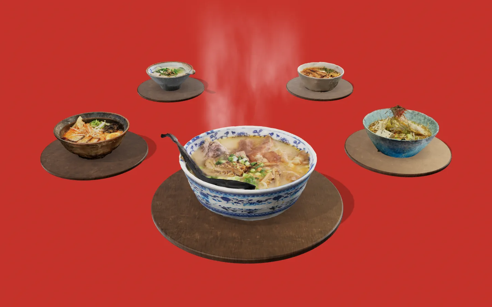

Umami Ring ramen bar. Now showing: Tonkotsu

Ramen bar · Concept 08
Bone broth, slow and milky. Twelve hours on the fire, ninety seconds to your seat.
See the menu01/ 05
Click a bowl, use the arrows or the keys
How we make the broth
Twelve hours.
No shortcuts.
- 01
Roast three bones
Pork, chicken and a little beef, roasted until they smell like Sunday.
- 02
Simmer 12 hours
A rolling boil turns the broth milky. We skim every hour.
- 03
Tare and oils
Soy, salt or miso seasoning, plus a spoon of scallion oil.
- 04
Noodles cut daily
Wavy, springy, cooked for 70 seconds and not one more.
- 05
Bowl in 90 seconds
Built on the ring and spun straight to your stool.
Opening hours
Fourteen stools
around the ring.
- Lunch
- Tue to Sun · 12:00 to 15:00
- Dinner
- Tue to Sun · 18:00 to 23:00
- Monday
- Closed, broth day
No real address.
Walk-ins welcome in theory.
Book a seat
Pull up
a stool.
This is a concept. Umami Ring is a fictional ramen bar designed by Zyqor Studio, so there's nothing to book (yet). The bowls are real ramen, scanned by the photographers credited below.